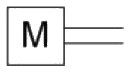
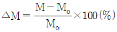
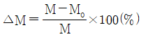
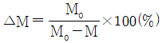
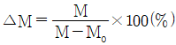
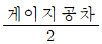
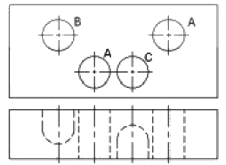
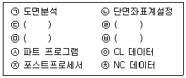
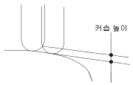

기계가공기능장 (2013-04-14 기출문제)
1과목: 임의 구분
1. 다음 유압 기호는 무엇을 나타내는 기호인가?

- 원통기
- 전동기
- 공압모터
- 유압모터
(정답률: 67%)

2. 유압회로에서 어떤 부분회로의 압력을 주회로의 압력보다 저압으로 해서 사용하고자 할 때 사용하는 밸브는?
- 감압 밸브
- 시퀀스 밸브
- 무부하 밸브
- 카운터 밸런스 밸브
(정답률: 100%)
3. 회로압력이 설정된 압력을 넣으면 막이 유체압력에 의해 파열되어 유압유를 탱크로 귀환시킴과 동시에 압력 상승을 막아 유압장치를 보호하는 역할을 하는 것은?
- 서보 밸브
- 릴리프 밸브
- 압력 스위치
- 유체 퓨즈
(정답률: 100%)
4. 압축공기의 건조 작용에 쓰이는 흡수식 건조기에 대한 설명 중 잘못된 것은?
- 흡수과정은 화학적 과정이다.
- 사용하는 건조제는 폴리에틸렌 등이 있다.
- 외부 에너지 공급이 필요하지 않다.
- 운전비용이 적게 들고, 효율이 높다.
(정답률: 90%)
5. 다음 중 베인 펌프의 특징에 관한 설명으로 틀린 것은?
- 먼지나 이물질에 의한 영향을 적게 받는다.
- 베인의 마모에 의한 압력저하가 발생하지 않는다.
- 카트리지 방식과 함께 호환성이 좋고 보수가 용이하다.
- 펌프의 출력에 비해 형상치수가 작다.
(정답률: 62%)
6. 감지대상 물체의 형상, 색깔, 재질이나 연기, 증기, 먼지 등의 환경에 영향을 받지 않고 검출할 수 있는 센서는?
- 유도형 센서
- 초음파 센서
- 변위 센서
- 압력 센서
(정답률: 90%)
7. 다음 중 PLC 제어 회로의 입력부로 사용되는 기기는?
- 공압 실린더
- 램프
- 전자밸브
- 리미트 스위치
(정답률: 91%)
8. 다음 중 고압 시스템에서 수분에 의한 고장으로 보기 어려운 것은?
- 밸브의 고착
- 갑작스런 압력강하
- 부식 작용에 의한 손상
- 에멀션 상태가 되어 밸브의 오동작
(정답률: 70%)
9. 산업용 로봇의 일반적 분류 중 미리 설정된 순서와 조건 및 위치에 따라 동작의 각 단계를 순차적으로 진행하는 로봇은?
- 시퀀스 로봇
- 플레이백 로봇
- 지능 로봇
- 감각제어 로봇
(정답률: 89%)
10. 다음 중 자동화시스템에서 센서의 선택기준으로 고려해야 할 사항으로 가장 거리가 먼 것은?
- 정확성
- 감지거리
- 신뢰성과 내구성
- 감지방향
(정답률: 62%)
11. 레이저 가공에 대한 설명으로 틀린 것은?
- 레이저의 종류는 기체 레이저, 액체 레이저, 고체 레이저, 반도체 레이저 등이 있다.
- 레이저 가공에 주로 이용되는 것은 고체 레이저와 기체 레이저이다.
- 난삭재 미세 가공에 적합하여 시계의 베어링, 보석, 다이아몬드, IC 저항의 트리밍 등에 사용된다.
- 레이저의 광은 전자계의 영향을 받으므로 이를 주의해서 가공해야 한다.
(정답률: 80%)
12. 액체호닝의 일반적인 특징으로 틀린 것은?
- 피닝 효과가 있다.
- 형상이 복잡한 것도 쉽게 가공할 수 있다.
- 다듬질면의 진직도가 매우 우수하다.
- 공작물 표면의 산화막을 제거하기 쉽다.
(정답률: 93%)
13. 드릴의 절삭도를 증가시키기 위해 선단의 일부를 갈아내는 것을 무엇이라고 하는가?
- pressing
- thining
- truing
- grinding
(정답률: 94%)
14. 슈퍼피니싱에서 숫돌의 길이는 일반적으로 어느 정도가 적당한가?
- 가공물 길이의 1/2 정도로 한다.
- 가공물 길이와 같게 한다.
- 가공물 지름과 같게 한다.
- 가공물 지름의 1/2 정도로 한다.
(정답률: 77%)
15. 세라믹공구에 대한 설명 중 틀린 것은?
- 산화알루미늄의 미분말을 소결한 재료이다.
- 고속절삭이 가능하다.
- 충격에 약하다.
- 연성, 인성이 높다.
(정답률: 87%)
16. 전기도금의 반대형상으로 가공물을 양극, 전기저항이 적은 구리, 아연을 음극오로 연결하여 전기에 의한 화학적인 작용으로 가공물의 표면이 용출되어 필요한 형상을 가공하는 방법은?
- 화학밀링
- 전해연마
- 방진가공
- 초음파연마
(정답률: 92%)
17. Ni, Ti, Ta 등의 경질 합금 탄화물 분말을 Co, Ni을 결합제로 하여 1400℃ 이상의 고온으로 가열하면서 프레스로 소결 성형한 절삭공구 재료는?
- 서멧
- 초경합금
- 고속도강
- 탄소 공구강
(정답률: 74%)
18. 초경합금의 연삭에 가장 적합한 숫돌은?
- A 숫돌
- WA 숫돌
- C 숫돌
- GC 숫돌
(정답률: 100%)
19. 회전하는 통속에 가공물, 숫돌입자, 가공액, 콤파운드 등을 함께 넣고 회전시켜 서로 부딪치며 가공되어 매끈한 가공면을 얻는 가공법은?
- 숏 피닝
- 액체 호닝
- 배럴 가공
- 버링
(정답률: 70%)
20. 브라운 샤프형 분할대를 이용하여 원주를 9등분하고자 할 때 분할판 크랭크는 몇 회전 시켜야 하는가?
- 4회전
- 8회전
- 9회전
- 18회전
(정답률: 83%)
2과목: 임의 구분
21. 공작기계의 운전시험 항목에 해당하지 않는 것은?
- 기능 시험
- 부하 운전 시험
- 백래시 시험
- 회전축의 흔들림 시험
(정답률: 83%)
22. 센터리스 연삭기의 이송법에서 이송속도 F(mm/min)를 구하는 식은? (단, D : 조정숫돌의 지름(mm), N : 조정숫돌의 회전수(rpm), α : 경사각(°)이다.)
- F = πDN × sinα
- F = DN × sinα
- F = πDN × tanα
- F = πDN × cosα
(정답률: 알수없음)
23. 절삭 온도를 측정하는 방법이 아닌 것은?
- 칼로리미터에 의한 방법
- Pbs 셀 광전자를 이용하는 방법
- 스트레인 게이지를 이용하는 방법
- 열전대를 이용하는 방법
(정답률: 73%)
24. 밀링에서 지름 20mm의 4날 엔드밀을 사용하여 절삭속도 60m/min, 이송 0.⑤mm/tooth로 절삭할 때 분당 이송량은 약 몇 mm/min 인가?
- 121
- 152
- 191
- 253
(정답률: 79%)
25. 밀링 머신에 대한 설명으로 틀린 것은?
- 다수의 절삭날을 가진 커터를 회전하여 가공을 하는 공작기계이다.
- 공구를 고정하고 공작물을 회전시켜 가공하는 공작기계이다.
- 불규칙하고 복잡한 면부터 더브테일, 총형 가공 등을 할 수 있다.
- 부속장치를 사용하여 다양한 가공을 할 수 있다.
(정답률: 87%)
26. 지름 50mm의 강봉을 회전수 1200rpm, 절입 2.5mm, 이송 0.3mm/rev 으로 가공할 때 주분력이 900N 이었다면 소요동력은 약 몇 kW 인가? (단, 기계의 효율은 85% 이다.)
- 4.75
- 3.92
- 3.32
- 2.64
(정답률: 47%)
27. 지그보링기의 작업조건을 설명한 것 중 가장 거리가 먼 것은?
- 작업광 내의 오도는 상온 ±1° 이내로 유지시키는 것이 좋다.
- 외부로부터 진동이 전달되지 않도록 방진처리 한다.
- 햇빛이 닿는 밝은 쪽이 좋다.
- 공기 필터를 통하여 바깥 공기를 빨아들이는 환기방식이 좋다.
(정답률: 100%)
28. 선반 주축은 스핀들 및 심압대를 사용하는 테이퍼의 종류는 어떤 것인가?
- 모스 테이퍼
- 쟈콥스 테이퍼
- 브라운샤프 테이퍼
- 내셔널 테이퍼
(정답률: 79%)
29. 정밀기계 가공을 위한 절삭조건에 대한 설명으로 맞는 것은?
- 공작물, 공구, 공작기계에 진동이 발생하도록 공진 현상을 유도한다.
- 공구의 마모가 커지는 저건이 다듬질 치수 정밀도 유지에 바람직하다.
- 절사가공 시 절삭 칩이 쉽게 빠져나올 수 있도록 절삭 조건을 선택한다.
- 공작물의 열팽창이 작아지는 조건이라면 다소 휨이 발생하여도 무리가 되는 것은 아니다.
(정답률: 86%)
30. 구성인선을 감소시키는 방법으로 옳지 않은 것은?
- 절삭깊이를 적게 한다.
- 절삭속도를 적게 한다.
- 경사각을 크게 한다.
- 윤활성이 좋은 절삭유제를 사용한다.
(정답률: 89%)
31. 공구를 재연삭하거나 새로운 공구로 교체하기 위한 공구의 일반적 수명 판정 방법으로 옳은 것은?
- 공구 인선의 마모가 일정량에 달했을 때
- 윤활제의 온도가 일정온도에 달했을 때
- 가공물의 온도가 일정온도에 달했을 때
- 가공 시 경작형 칩 형태에서 유동형 칩 형태로 변경되었을 때
(정답률: 72%)
32. 절삭유의 구비조건 중 잘못된 것은?
- 인화점 발화점이 낮을 것
- 냉각성이 우수할 것
- 장시간 사용 후에도 변질되지 않을 것
- 방청 및 방식성이 좋을 것
(정답률: 90%)
33. 탄소강은 200~300℃에서 상온에서보다 경도가 높고 연신율이 대단히 작아져서 결국 인성이 저하되고 메지게 되는 성질을 갖는데 이러한 성질을 무엇이라 하는가?
- 저온 취성
- 청열 취성
- 적열 취성
- 산온 취성
(정답률: 77%)
34. Al-Si계 합금을 더욱 강력하게 하기 위하여 Mg을 첨가한 것으로 기계적 성질이 좋은 합금은?
- γ-실루민
- 마그날륨
- 두랄루민
- 알코아
(정답률: 80%)
35. 표점거리 50mm, 직경 ø14mm인 인장시편을 시험한 후 시편을 측정한 결과 길이는 늘어나고 직경은 ø12mm로 줄어들었다면, 이 재료의 단면 수축율은 약 몇 % 인가?
- 13.5
- 20.5
- 26.5
- 36.1
(정답률: 65%)
36. 구리의 일반적인 성질에 대한 설명으로 틀린 것은?
- 전기 및 열의 전동성이 우수하다.
- 전성과 연성이 좋아 가공이 쉽다.
- 철강재료에 비해 내식성이 크다.
- 강도가 커서 구조용 재료로 적당하다.
(정답률: 73%)
37. 다음 중 내식성 특수목적으로 사용되는 스테인리스강의 주성분으로 맞는 것은?
- Fe-Co-Mn
- Fe-W-Co
- Fe-Cu-V
- Fe-Cr-Ni
(정답률: 84%)
38. 구상흑연 주철의 종류 중 시멘타이트형이 발생하는 원인으로 틀린 것은?
- C, Si가 많을 때
- 접종이 부족할 때
- 냉각속도가 빠를 때
- Mg의 첨가량이 많을 때
(정답률: 58%)
39. 침탄법과 질화법을 비교한 설명으로 틀린 것은?
- 경화 부위의 경도는 질화법이 더 높다.
- 침탄 처리 후에는 열처리가 필요하나 질화처리 후에는 열처리가 필요 없다.
- 침탄 처리 후에는 경화에 의한 변형이 생기기 쉬우나 질화 처리 후에는 경화에 의한 변형이 적다.
- 침탄 처리 후에는 수정이 불가능하나 질화처리 후에는 수정이 가능하다.
(정답률: 91%)
40. 투영기의 교정과 관리에서 배율교정을 위한 배율 오차를 구하는 식으로 옳은 것은? (단, △M : 배율오차, M : 실축한 비율, Mo : 호칭배율)




(정답률: 50%)
3과목: 임의 구분
41. 다음 중 표면거칠기 측정법과 거리가 먼 것은?
- 표준편과의 비교 측정법
- 촉침식 표면거칠기 측정법
- 테이블 회전식 표면거칠기 측정법
- 현이 간섭식 표면거칠기 측정법
(정답률: 77%)
42. 다음 측정기들 중 아베의 원리에 맞는 구조를 갖고 있는 측정기는?
- 버니어 캘리퍼스
- 외측 마이크로미터
- 하이트 게이지
- 지렛대식 다이얼 테스트 인디케이터
(정답률: 100%)
43. 3침법에 의해 나사의 유효지름을 측정하고자 한다. 유효지름 18.376mm인 M20 나사에 3침을 설치하고 외측 마이크로미터로 측정한다면 3침 접촉 후 외측 측정값이 약 몇 mm 인가? (단, 나사의 피치는 2.5mm, 삼침의 지름은 1.4434mm이며, 리드각 보청은 무시한다.)
- 16.211
- 20.541
- 24.872
- 28.347
(정답률: 39%)
44. 다음 중 오토콜리메이터로 측정할 수 없는 것은?
- 정밀정반의 평면도
- 단면의 흔들림
- 미소 각도의 편차
- 공작기계 베드면의 표면거칠기
(정답률: 90%)
45. 구멍용 플러그 한계게이지의 통과측을 구하는 공식은?
- (구멍최소지름 + 마모여유 -
 ) + 게이지 공차
) + 게이지 공차 - (구멍최대지름 + 마모여유 -
 ) + 게이지 공차
) + 게이지 공차 - (구멍최소지름 – 마모여유 -
 ) + 게이지 공차
) + 게이지 공차 - (구멍최대지름 – 마모여유 -

) + 게이지 공차
(정답률: 67%)
46. 그림과 같이 2개의 구멍 A는 관통되었고, 구멍 B, C는 막힌 구멍인 공작물을 가공할 때 쓰이는 지그는 어떤 것이 가장 적합한가?

- 박스 지그
- 판형 지그
- 바이스 지그
- 조립 지그
(정답률: 73%)
47. 보통 드릴 지그판의 두께는 공구 지름의 몇 배 정도가 적절한가?
- 공구지름의 1~2배
- 공구지름의 3~4배
- 공구지름의 5~6배
- 공구지름의 7~8배
(정답률: 93%)
48. 치공구 설계의 기본원칙에 해당되지 않는 것은?
- 치공구의 제작비와 손익 분기점을 고려할 것
- 손으로 조작하는 치공구는 충분한 감도를 가지면서 가볍게 설계할 것
- 클램핑 요소에서는 되도록 스패너, 핀, 쇄기, 해머와 같이 여러 가지 부품을 같이 사용할 수 있도록 설계할 것
- 정밀도가 요구되지 않거나 조립이 되지 않는 불필요한 부분에 대해서는 기계가공 작업을 하지 않도록 할 것
(정답률: 84%)
49. ISO 규격에서 지정한 사항으로 지그판과 라이닝 부싱과의 끼워맞춤 관계로 가장 적절한 것은?
- H7-n6
- H7-g6
- F7-m6
- F7-h6
(정답률: 73%)
50. 최근의 시제품을 만드는 방법으로 모델링 데이터를 한층, 한층 쌓아서 만드는 공정 방식은?
- 리버스 엔지니어링
- 쾌속 조형
- FMG 시스템
- 리모델링 시스템
(정답률: 75%)
51. 다음은 CAM가공 작업과정을 나타낸 것이다. ( ) 에 들어갈 작업과정이 순서대로 나열된 것은?

- 곡선정의 → 도형정의 → 곡면정의 → 가공조건설정
- 가공조건설정 → 곡선정의 → 곡면정의 → 도형정의
- 곡면정의 → 곡선정의 → 가공조건설정 → 도형정의
- 도형정의 → 곡선정의 → 곡면정의 → 가공조건설정
(정답률: 60%)
52. CNC 선반에서 1000rpm 으로 회전하는 스핀들에 4회전 휴지를 주려고 한다. 정지시간은 약 얼마인가?
- 0.1초
- 0.25초
- 1초
- 1.5초
(정답률: 92%)
53. 다음 중 3차원 기하학적 형상 모델링 아닌 것은?
- 와이어 모델링
- 서피스 모델링
- 시스템 모델링
- 솔리드 모델링
(정답률: 75%)
54. 다른 조건이 일정할 때 머시닝센터에서 볼 엔드밀로 NC가공 시 커습의 높이에 가장 적은 영향을 주는 것은?

- 공구경로 간격
- 공구의 반경
- 피삭재의 경사도
- 공구 경로점 간의 길이
(정답률: 74%)
55. 공정 중에 발생하는 모든 작업, 검사, 운반, 저장, 정체 등이 도식화 된 것이며 또한 분석에 필요하다고 생각되는 소요시간, 운반거리 등의 정보가 기재된 것은?
- 작업분석
- 다중활동분석표
- 사무공정분석
- 유도공정도
(정답률: 62%)
56. 단계여유의 표시로 옳은 것은? (단, TE는 가장 이른 예정일, TL은 가장 늦은 예정일, TF는 총 여유시간, FF는 자유 여유시간이다.)
- TE-TL
- TL-TE
- EF-TF
- TE-TF
(정답률: 75%)
57. 다음 중 브레인스토밍과 가장 관계가 깊은 것은?
- 파레토도
- 히스토그램
- 회귀분석
- 특성요인도
(정답률: 91%)
58. 검사의 분류 방법 중 검사가 행해지는 공정에 의한 분류에 속하는 것은?
- 관리 샘플링검사
- 로트별 샘플링검사
- 전수검사
- 출하검사
(정답률: 72%)
59. c관리도에서 k=20인 군의 총 부적합수 합계는 58이었다. 이 관리도의 UCL, LCL을 계산하면 약 얼마인가?
- UCL=2.90, LCL=고려하지 않음
- UCL=5.90, LCL=고려하지 않음
- UCL=6.92, LCL=고려하지 않음
- UCL=6.01, LCL=고려하지 않음
(정답률: 29%)
60. 테일러에 의해 처음 도입된 방법으로 작업시간을 직접 관측하여 표준시간을 설정하는 표준시간 설정기법은?
- PTS법
- 실적자료법
- 표준자료법
- 스톱워치법
(정답률: 70%)